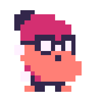
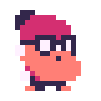

着色器经常被用来在游戏中创建漂亮的图形效果。它们也是GameMaker提供的最先进的功能之一，所以在开始使用它们之前，你有必要对编程和GameMaker的工作方式有一个基本的了解。
那么，什么是shader ？最初，它们被创造出来为照明提供阴影（因此而得名），但现在它们被用来产生大量的效果。Shader 代码与普通代码相似，但它（几乎总是）由GPU而不是CPU执行。这种差异带来了它自己的一套规则和限制，但我们将在后面介绍这些。
每个shader ，由两个独立的部分组成：一个顶点shader ，一个片段shader （也被称为像素着色器）。让我们从vertex shader 。每个sprite 是由一个矩形组成的，但计算机喜欢画三角形，所以这些矩形被分成两个三角形（有时称为四边形）。这使我们在每个sprite ，有六个顶点（角），但其中两个是同一个，所以我们只需担心四个。现在，想象一下，我们有一个forloop ，它覆盖每一个vertex ，并为每一个vertex shader ，执行里面的代码。这样我们就可以在把vertex 的位置和颜色传给片段shader 之前改变它，因为vertex shader 是提前执行的。
下面是这样的情况。
对于片段shader ，你可以想象和以前一样的loop ，但这次它要经过你的sprite 中的每一个像素，给你提供该像素的位置和颜色等信息。在你的片段shader 代码中，你进行操作和计算来确定该像素的颜色，以获得你想要的效果。例如，如果你想让你的shader ，使你的sprite 是黑白的，那么你要计算每个像素需要是哪种灰色的，以产生这种效果。
它看起来会是这样的。
shader 代码通常由GPU执行，原因是它的效率更高。现代CPU通常有两到八个内核。每个核心一次可以执行一个任务，所以通过利用多个核心的优势，我们可以同时执行那么多任务。相比之下，现代GPU可以执行数以千计，甚至数以万计的任务同时运行。这对于 ，因为我们可以同时执行成千上万个像素的 代码。其局限性在于，我们只能访问 的初始状态，所以我们不知道对其他像素所做的任何修改，因为我们不能确定代码是否已经在它们身上运行。shaders shader sprite
注意：GameMaker允许用户用GLSL（OpenGLshaders Language）、HLSL（High-levelShader Language，在使用DirectX时使用）和GLSL ES（GLSL的一个子集，在移动设备中很常见）编写Shader 。在这里，我们使用GLSL ES作为shader ，因为它是在目标平台上提供最佳兼容性的语言。一般来说，除非你有非常特殊的需求并且了解其他shader 语言的局限性，否则你总是想使用这种语言。然而，这三种语言之间的数学和技术应该是相似的，只是在这里和那里有一些语法上的差异。
vertex shader 首先被执行，正如我们上面解释的，它处理顶点。它被用来计算位置、法线和texture 坐标。这些shaders ，在2D中不是特别有用，因为每个sprite 通常是一个正方形，但它可以用来做一些倾斜、缩放等。在三维中，它在照明计算和网格变形方面变得更加有用。片段shaders 更为有趣，也是这里将主要涉及的内容，因为片段shader 是我们获得有关我们的textures 的信息的地方，可以调整我们图像中每个像素的最终颜色。
如果你在GameMaker中创建了一个shader ，你可能已经注意到在默认的直通车 shader 中有以下关键词。这些关键字有助于shader ，了解每个变量的目的和范围。
你还会看到vec作为一个关键字的使用。这是在shader ，你很快就会看到，在使用shaders ，向量是非常重要的。这就是为什么它们在GLSL中被实现为一个基本类型。如果你对它们不熟悉，它们是一个数学术语，表示为只有一列的矩阵。在编程中，我们通常将它们表示为一个数组，其中组件的数量与维度相对应。二维和三维向量通常用于位置、texture 坐标或没有alpha通道的颜色，而四维向量则用于有alpha通道的颜色。我们还可以指定它们是否持有布尔值、整数或浮点值。声明一个矢量的语法是这样的。
vec2 firstVec; // Two-dimensional vector of floats
vec3 secondVec; // Three-dimensional vector of floats
vec4 thirdVec; // Four-dimensional vector of floats
bvec3 boolVec; // Three-dimensional vector of booleans
ivec4 intVec; // Four-dimensional vector of integers
为了初始化它们，我们可以使用构造函数来创建向量。你需要提供与向量长度相同数量的值，但你可以混合使用标量和较小的向量来达到目标长度。下面是一些例子。
// Simple 2D vector with 2 scalar values
vec2 firstVec = vec2(2.0, 1.0);
// A 4D vector using 2 scalars and a vec2 create the 4 values
vec4 secondVec = vec4(1.0, firstVec, 0.0);
// A 3D vector using 1 component of a vec4 plus a vec2 to create the 3 values
vec3 thirdVec = vec3(secondVec.x, firstVec);
我们也可以给他们分配另一个相同长度的向量（或者把 向量刷到 合适的长度，但我们稍后会解释）。
vec3 firstVec;
vec3 secondVec = firstVec;
vec4 thirdVec = secondVec.xyz;
vec2 fourthVec = thirdVec.zx;
在GLSL中访问矢量组件时，我们有几个选择。最基本的是把矢量当作一个数组，用方括号来访问组件，像这样。
vec4 myVec;
myVec[0] = 1.0;
myVec[1] = 0.0;
myVec[2] = 2.0;
myVec[3] = 1.0;
然而，还有另一种方法来访问这些组件，其语法如下。
vec4 myVec;
myVec.x = 1.0;
myVec.y = 2.0;
这使用矢量内部的分量名称来访问它们。你可以使用x、y、z或w，分别获得第一、第二、第三或第四个组件。我们把这种方法称为swizzling ，因为下面的语法也是有效的。
vec4 firstVec;
vec3 secondVec = firstVec.xyz;
vec2 thirdVec = secondVec.zy;
vec4 fourthVec = thirdVec.yxxy;
正如你所看到的，我们可以使用最多四个字母的任何组合来创建一个该长度的向量。我们不能试图访问一个超出界限的分量（例如，试图访问 secondVec 或 thirdVec 中的w，因为它们没有第四个分量）。另外，我们可以重复使用字母，并以任何顺序使用它们，只要分配给它的向量变量的大小与使用的字母数相同。
由于明显的原因，在使用swizzle设置组件值时，你不能两次使用同一个组件。例如，下面的内容是无效的，因为你试图将同一个组件设置为两个不同的值。
myVec.xx = vec2(2.0, 3.0);
最后，我们一直在使用 xyzw 作为我们的swizzle mask，在处理位置时通常是这样的。还有两组掩码你可以使用： rgba （用于颜色），或 stpq （用于texture 坐标）。在内部，这些掩码之间没有任何区别，我们使用它们只是为了让代码更清楚地说明矢量在该实例中代表什么。另外，我们不能在同一操作中结合swizzle掩码，所以这是无效的。
myVec = otherVec.ybp;
这些是很多的定义和信息，但知道这些东西对理解shaders 本身是必要的。
当你在GameMaker中创建一个shader ，它将为你打开两个文件：一个vertex shader (.vsh)和一个片段shader (.fsh)。这是你可以制作的最基本的shader ，它接收一个sprite ，读取texture ，并以该颜色为每个像素着色。如果你在绘图时指定了vertex 的颜色，这些颜色将与texture 混合。
让我们浏览一下新创建的shader asset 的代码，并对其进行分析，首先是vertex shader 。
// Passthrough Vertex Shader
attribute vec3 in_Position; // (x,y,z)
//attribute vec3 in_Normal; // (x,y,z) unused in this shader.
attribute vec4 in_Colour; // (r,g,b,a)
attribute vec2 in_TextureCoord; // (u,v)
varying vec2 v_vTexcoord;
varying vec4 v_vColour;
void main()
{
vec4 object_space_pos = vec4( in_Position.x, in_Position.y, in_Position.z, 1.0);
gl_Position = gm_Matrices[MATRIX_WORLD_VIEW_PROJECTION] * object_space_pos;
v_vColour = in_Colour;
v_vTexcoord = in_TextureCoord;
}
在主函数之外，我们看到了一些变量的声明和它们的限定符。这些属性是由GameMaker 给予的。变化的属性是由用户创建的，以便将这些信息传递给片段shader 。在主函数内部，我们有计算来找到顶点的屏幕位置。
如果你不打算使用shader ，那么这个vertex ，而且在下面的例子中也不会用到它，因为所有显示的效果都会用片段shader 。
现在让我们快速看一下这个片段shader 。
// Passthrough Fragment Shader
varying vec2 v_vTexcoord;
varying vec4 v_vColour;
void main()
{
gl_FragColor = v_vColour * texture2D( gm_BaseTexture, v_vTexcoord );
}
如前所述，片段shader 背后的想法是要返回当前像素的颜色。这是通过给变量 gl_FragColor 赋予最终颜色值来实现的。 texture2D 函数接收一个texture 和一个 vec2 ，其中包括你想在该texture 中检查的UV坐标，它返回一个带有颜色的 vec4 。在通过shader ，我们所做的就是抓取这个像素坐标中的texture 的颜色，然后乘以与这个像素相关的vertex 的颜色。
现在我们有了第一个shader ，我们要做的就是创建一个object ，并给它分配一个sprite ，然后在object 的绘图事件中，你要像这样设置shader 。
// Draw Event
shader_set(shdrColorOverlay);
draw_self();
shader_reset();
我们在 shader_set()和 shader_reset()之间的每一个绘图调用都会被应用到shader 。在这里，我们正在用我们的穿透着色器绘制object sprite 。
正如你可能已经猜到的，这在视觉上不会改变任何东西，因为这是一个简单的直通式shader 。然而，下面的章节概述了一些简单的步骤，你可以采取这些步骤来修改，改变sprite 的绘制方式。每一节都展示了一个不同的shader ，你可以在你的项目中创建和使用，解释了创建它们所需的步骤以及为什么我们要这样做。
我们现在可以编辑基础shader ，做一些不同的事情。我们不接触vertex shader ，只编辑片段shader ，首先我们要做一个非常简单的操作，就是让shader 使用红色绘制sprite 。我们将通过简单地将 gl_FragColor 改为红色来实现这一目的。就像这样。
// Color Overlay Fragment Shader
void main()
{
gl_FragColor = vec4(1.0, 0.0, 0.0, 1.0);
}
这将给我们带来以下结果。
这和我们预期的不太一样我们需要记住的是，每个sprite ，最终都是一个矩形，所以除非我们考虑透明度--我们没有考虑--这就是我们将得到的结果。
注意：在上图中，矩形的大小是变化的，因为基础sprite ，当它被texture 放在GameMaker 页面时，它周围的 "空 "被自动裁剪了，所以每一个动画帧，组成它的三角形都是不同的大小，以适应框架的裁剪尺寸。如果你禁用这个选项，那么你就只能在屏幕上看到一个没有动作的红色方块。
上面我们提到了 texture2D 函数，我们将用它来抓取我们正在处理的像素点的颜色，并从中获得透明度。texture2D 的返回值是一个 vec4 ，其中的组成部分是红、绿、蓝和 alpha，依次排列。我们可以通过在变量名后面加一个句号，然后加一个 a ，或者加一个 w ，来访问alpha通道。这分别对应于RGBA和XYZW。
下面是更新后的代码。
// Color Overlay Fragment Shader
varying vec2 v_vTexcoord;
void main()
{
vec4 texColor = texture2D(gm_BaseTexture, v_vTexcoord);
gl_FragColor = vec4(1.0, 0.0, 0.0, texColor.a);
}
我们现在将一个新的 vec4 到 gl_FragColor ，其中红色通道是最大的，绿色和蓝色通道是零，阿尔法通道与原始texture 相同。输出结果看起来像这样。
现在，这就是我们所追求的!我们把每个像素的颜色都换成了红色，但保持了阿尔法通道的完整。
每次我们想使用不同的颜色时都要改变shader ，这不是一个好主意，特别是我们需要为每一种我们想要的颜色单独设置一个shader 。相反，我们将使用一个统一的颜色信息传递给shader 。要做到这一点，我们首先需要获得一个指向制服的指针 。我们将在拥有object 的sprite 的创建事件中通过添加来实现这一点。
// Create Event
_uniColor = shader_get_uniform(shdrColorOverlay, "u_colour");
_color = [1.0, 1.0, 0.0, 1.0];
我们所要做的就是调用 shader_get_uniform()来获得一个指向统一的指针。我们需要传递的参数是shader asset 名称（不带引号，因为我们要传递GameMaker 为我们生成的 ID）和shader 里面的制服变量的名称，这次是string 。这个名称需要与shader 代码里面的名称完全一致，才能发挥作用。我们还添加了一个颜色变量，这样我们就可以在runtime ，让它记住我们的变化。
现在，我们绘制事件中的代码将稍作改变，以传递统一的变量。
// Draw Event
shader_set(shdrColorOverlay);
shader_set_uniform_f_array(_uniColor, _color);
draw_self();
shader_reset();
这和之前的代码一样，但是在我们绘制任何东西之前，我们需要将所有的统一值传递给shader 。在这种情况下，我们将颜色作为一个浮点数组传递。至于shader ，我们将把它改成包括统一的并使用它，所以它变成了。
// Color Overlay Fragment Shader
varying vec2 v_vTexcoord;
uniform vec4 u_color;
void main()
{
vec4 texColor = texture2D(gm_BaseTexture, v_vTexcoord);
gl_FragColor = vec4(u_color.rgb, texColor.a);
}
我们声明一个与创建shader 相同名称的变量(u_color)，并将其作为 gl_FragColor 向量的前三个分量传递，利用swizzling的优势。如果我们再次编译，我们应该看到这个。
现在，shader 更加有用和可重复使用。如果你需要它在runtime 过程中设置颜色（使用变量 _color ），那就看你如何添加更多的功能。
制作一个黑白shader ，是了解更多关于shaders 工作的好方法，很多初学者都是从尝试这样做开始的，因为从概念上来说，这很简单：获得每个像素并为其分配一个灰色的阴影。但这简单吗？并非如此...
当使用RGB颜色时，如果所有三个分量都是相同的值，那么我们就得到一个灰色调。使用这个想法创建shader ，天真的做法是将所有三个颜色通道（红、绿、蓝）相加，然后除以3。之后，你会把这个值分配给所有三个通道，从而创造一个灰调。下面是这个片段shader 的样子。
// Black and white fragment shader
varying vec2 v_vTexcoord;
varying vec4 v_vColour;
void main()
{
vec4 texColor = texture2D(gm_BaseTexture, v_vTexcoord);
float gray = (texColor.r + texColor.g + texColor.b) / 3.0;
gl_FragColor = v_vColour * vec4(gray, gray, gray, texColor.a);
}
你可能已经注意到了一件事，在 gl_FragColor 代码中，我们将vec4 与一个叫做 v_vColour 的东西相乘。这是一个由vertex shader 传递的变量，它告诉我们与这个像素相关的vertex 的颜色。将最终计算出的颜色与vertex 的颜色相乘，总是一个好主意。在大多数情况下，它不会做任何事情，但如果你在vertex 中改变了GML 的颜色，这将反映出来（通过使用函数如 draw_sprite_ext()或 draw_sprite_general()来改变 image_blend).
至于抽签事件，由于我们没有制服可以传入，所以很简单。
// Draw Event
shader_set(shdrBlackAndWhite);
draw_self();
shader_reset();
让我们编译一下，看看我们得到了什么。
这看起来已经很棒了，对吗？嗯，是的，也不是......有一个更 "正确 "的解决方案，因为我们不是将各部分相加再除以3，而是将各部分乘以NTSC标准的黑白值。下面是修改后的片段shader 代码。
// Black and white fragment shader
varying vec2 v_vTexcoord;
void main()
{
vec4 texColor = texture2D(gm_BaseTexture, v_vTexcoord);
float gray = dot(texColor.rgb, vec3(0.299, 0.587, 0.114));
gl_FragColor = vec4(gray, gray, gray, texColor.a);
}
我们使用点积作为速记，将 texColor 的每个组成部分与正确的权重相乘，然后将它们加在一起。如果你不熟悉点积，这基本上是正在发生的事情。
float gray = (texColor.r * 0.299) + (texColor.g * 0.587) + (texColor.b * 0.114);
最后，它看起来非常相似，但在技术上更正确。

我们最后的shader 例子是一个有趣的例子，可以用来为文本和按钮以及其他东西添加生命。我们将从简单的开始，逐步增加功能，因为这个shader 是高度可定制的。这个例子要涵盖的内容相当多，所以如果你感到有点迷茫或困惑，请回头重新阅读上面的一些章节。
我们要做的第一件事是根据像素的水平位置，用每一种色调给像素着色。做到这一点的方法是将x位置设置为色调，然后从HSV（色调、饱和度、亮度）格式转换为RGB（红、绿、蓝）格式。为此，我们将需要在我们的片段shader ，写一个辅助函数，接收HSV值并返回RGB矢量。我们将使用一个单一的函数来完成这个任务，而不需要任何 if 语句，因为在shader 代码中使用条件语句会使shaders 非常 慢，所以应该避免。
以下是shader 在这个阶段的样子。
// Fragment Shader
varying vec2 v_vTexcoord;
varying vec4 v_vColour;
vec3 hsv2rgb(vec3 c)
{
vec4 K = vec4(1.0, 2.0 / 3.0, 1.0 / 3.0, 3.0);
vec3 p = abs(fract(c.xxx + K.xyz) * 6.0 - K.www);
return c.z * mix(K.xxx, clamp(p - K.xxx, 0.0, 1.0), c.y);
}
void main()
{
vec3 col = vec3(v_vTexcoord.x, 1.0, 1.0);
float alpha = texture2D(gm_BaseTexture, v_vTexcoord).a;
gl_FragColor = v_vColour * vec4(hsv2rgb(col), alpha);
}
比起前面的例子，这里发生的事情更多一些，但大部分对你来说应该是相当明显的。首先，是我们的 hsv2rgb 函数，它接收一个带有我们的HSV颜色的 vec3 ，并返回另一个带有我们的RGB转换的 vec3 。在主函数中，我们首先创建我们的HSV颜色，其中色相是我们的X位置，我们现在将饱和度和亮度保持为1.0。然后，我们从texture ，所以它只给我们的sprite ，而不是整个sprite 矩形上色（就像我们在上面的颜色叠加例子中做的那样）。最后，我们将我们的Fragment颜色设置为我们的HSV颜色与alpha转换为RGB，再乘以vertex 颜色（好的做法是一直这样做）。
至于我们的绘图代码，目前是微不足道的。
// Draw Event
shader_set(shdrRainbow);
draw_self();
shader_reset();
让我们来看看我们得到了什么。
我们已经接近我们想要的了，但是有一个问题：我们在动画的每一帧都没有同时看到所有的颜色，而且颜色似乎是随机变化的。原因是我们假设 v_vTexcoord 给我们的是sprite 的坐标，从左上角（0,0）开始，到右下角（1,1）结束，这在shaders 中是标准的。然而，为了优化，GameMaker 把尽可能多的textures 塞到所谓的纹理页中，正因为如此，我们的texture 实际看起来就是这样。
如上所述， v_vTexcoord 给我们的是整个sprite 页面中texture 的绝对坐标，但我们想要的是一个从 0.0 到 1.0 的值，只涵盖我们当前的sprite 。这个过程被称为归一化（得到一个值并将其转换为0到1的范围）。为了使我们的水平值正常化，我们需要知道上图中x0和x1的值。幸运的是，GameMaker 有一个函数可以给我们的sprite 中的每个角在texture 页面中的位置。首先，我们需要去创建事件，并创建一个统一的数据，将这些数据传递给着色器。
// Create Event
_uniUV = shader_get_uniform(shdrRainbow, "u_uv");
我们修改draw事件以获得数值，然后把它们传递给着色器。
// Draw Event
shader_set(shdrRainbow);
var uv = sprite_get_uvs(sprite_index, image_index);
shader_set_uniform_f(_uniUV, uv[0], uv[2]);
draw_self();
shader_reset();
该函数 sprite_get_uvs()需要一个sprite 和一个索引，然后它返回一个包含大量信息的数组，比如每个角的坐标，为了优化它而裁剪了多少像素，等等。我们对其中的两个值感兴趣：sprite 的左和右坐标，它们分别存储在 uv[0] 和 uv[2] 。在片段shader ，我们现在将使用这些值来计算标准化的水平位置，就像这样。
// Fragment Shader
varying vec2 v_vTexcoord;
varying vec4 v_vColour;
uniform vec2 u_uv;
vec3 hsv2rgb(vec3 c)
{
vec4 K = vec4(1.0, 2.0 / 3.0, 1.0 / 3.0, 3.0);
vec3 p = abs(fract(c.xxx + K.xyz) * 6.0 - K.www);
return c.z * mix(K.xxx, clamp(p - K.xxx, 0.0, 1.0), c.y);
}
void main()
{
float pos = (v_vTexcoord.x - u_uv[0]) / (u_uv[1] - u_uv[0]);
vec3 col = vec3(pos, 1.0, 1.0);
float alpha = texture2D(gm_BaseTexture, v_vTexcoord).a;
gl_FragColor = v_vColour * vec4(hsv2rgb(col), alpha);
}
在这里，我们在文件的顶部添加统一的变量，名称与我们在创建事件中使用的相同。接下来，我们通过将我们当前的 x 坐标平移到原点来计算归一化的水平位置( v_vTexcoord.x - u_uv[0])，然后我们将其除以sprite 的宽度，使其范围从0到1(u_uv[1] - u_uv[0])。
其结果是。
我们走吧!这正是我们想要的结果。我们可以看到光谱中的每一种颜色，在我们的sprite 。
你可能会对此感到满意，但我们可以用这个shader ，增加一些乐趣。如果我们给基于时间的颜色增加一个偏移量来产生运动，会怎么样呢？要做到这一点，我们将需要两个额外的变量来表示速度 和时间。我们还需要两件制服，每个新变量一件，所以创建事件变成了。
// Create Event
_uniUV = shader_get_uniform(shdrRainbow, "u_uv");
_uniTime = shader_get_uniform(shdrRainbow, "u_time");
_uniSpeed = shader_get_uniform(shdrRainbow, "u_speed");
_time = 0;
_speed = 1.0;
我们还需要增加每一帧的时间，所以在步骤事件中，我们添加。
// Step Event
_time += 1 / room_speed;
现在让我们进入绘制事件，将这些制服发送到着色器。
// Draw Event
shader_set(shdrRainbow);
var uv = sprite_get_uvs(sprite_index, image_index);
shader_set_uniform_f(_uniUV, uv[0], uv[2]);
shader_set_uniform_f(_uniSpeed, _speed);
shader_set_uniform_f(_uniTime, _time);
draw_self();
shader_reset();
最后，我们将回到我们的shader ，现在实际使用这些变量。我们要做的是将速度与时间相乘，并将其加到位置上，像这样。
// Fragment Shader
varying vec2 v_vTexcoord;
varying vec4 v_vColour;
uniform vec2 u_uv;
uniform float u_speed;
uniform float u_time;
vec3 hsv2rgb(vec3 c)
{
vec4 K = vec4(1.0, 2.0 / 3.0, 1.0 / 3.0, 3.0);
vec3 p = abs(fract(c.xxx + K.xyz) * 6.0 - K.www);
return c.z * mix(K.xxx, clamp(p - K.xxx, 0.0, 1.0), c.y);
}
void main()
{
float pos = (v_vTexcoord.x - u_uv[0]) / (u_uv[1] - u_uv[0]);
vec3 col = vec3((u_time * u_speed) + pos, 1.0, 1.0);
float alpha = texture2D(gm_BaseTexture, v_vTexcoord).a;
gl_FragColor = v_vColour * vec4(hsv2rgb(col), alpha);
}
如果你所做的一切都正确，你应该看到像这样的东西。
为了完成这个shader ，我们将添加一些更多的制服来进一步定制它。前两个是用来控制饱和度和亮度的。下一个我们将称为 "部分"，其功能是允许用户传递一个介于0和1之间的数字，以确定我们在一次看到的整个光谱的百分比。最后，我们将添加一个名为 "mix "的变量，它将指定我们要将我们的shader 颜色与原始texture 颜色混合的程度（1.0是所有彩虹，0.0是所有texture ）。像往常一样，让我们先把变量添加到创建事件中。
// Create Event
_uniUV = shader_get_uniform(shdrRainbow, "u_uv");
_uniTime = shader_get_uniform(shdrRainbow, "u_time");
_uniSpeed = shader_get_uniform(shdrRainbow, "u_speed");
_uniSection = shader_get_uniform(shdrRainbow, "u_section");
_uniSaturation = shader_get_uniform(shdrRainbow, "u_saturation");
_uniBrightness = shader_get_uniform(shdrRainbow, "u_brightness");
_uniMix = shader_get_uniform(shdrRainbow, "u_mix");
_time = 0;
_speed = 1.0;
_section = 0.5;
_saturation = 0.7;
_brightness = 0.8;
_mix = 0.5;
我们的抽奖活动改变了，包括这些制服，像这样。
// Draw Event
shader_set(shdrRainbow);
var uv = sprite_get_uvs(sprite_index, image_index);
shader_set_uniform_f(_uniUV, uv[0], uv[2]);
shader_set_uniform_f(_uniSpeed, _speed);
shader_set_uniform_f(_uniTime, _time);
shader_set_uniform_f(_uniSaturation, _saturation);
shader_set_uniform_f(_uniBrightness, _brightness);
shader_set_uniform_f(_uniSection, _section);
shader_set_uniform_f(_uniMix, _mix);
draw_self();
shader_reset();
至于shader ，我们需要将饱和度和亮度传递给颜色，这将影响我们的辅助函数生成的颜色。该部分需要乘以我们的位置以减少范围。我们还将抓取整个texture 颜色，这样我们就可以通过混合texture 颜色和我们颜色的RGB转换来计算我们的最终颜色。混合函数的最后一个参数决定了我们要添加多少第二种颜色。这就是我们最终的shader 代码。
// Fragment Shader
varying vec2 v_vTexcoord;
varying vec4 v_vColour;
uniform vec2 u_uv;
uniform float u_speed;
uniform float u_time;
uniform float u_saturation;
uniform float u_brightness;
uniform float u_section;
uniform float u_mix;
vec3 hsv2rgb(vec3 c)
{
vec4 K = vec4(1.0, 2.0 / 3.0, 1.0 / 3.0, 3.0);
vec3 p = abs(fract(c.xxx + K.xyz) * 6.0 - K.www);
return c.z * mix(K.xxx, clamp(p - K.xxx, 0.0, 1.0), c.y);
}
void main()
{
float pos = (v_vTexcoord.x - u_uv[0]) / (u_uv[1] - u_uv[0]);
vec4 texColor = texture2D(gm_BaseTexture, v_vTexcoord);
vec3 col = vec3(u_section * ((u_time * u_speed) + pos), u_saturation, u_brightness);
vec4 finalCol = mix(texColor, vec4(hsv2rgb(col), texColor.a), u_mix);
gl_FragColor = v_vColour * finalCol;
}
而我们的最终结果是这样的!

这个简短的指南就到此为止，你现在应该对shaders 的工作方式和它们的一些用途有了更好的了解。你应该花时间玩玩你按照本指南创建的shaders ，并尝试用它们来做其他事情--创建一个模糊的shader ，或者一个能做出游戏机式单色屏幕的shader ，怎么样？- 因为shaders 是一个令人难以置信的强大工具，可以为你的游戏增加视觉上的复杂性和风格。
我们要感谢Alejandro Hitti和亚马逊允许我们复制本指南。你可以在亚马逊开发者博客上找到原始版本。